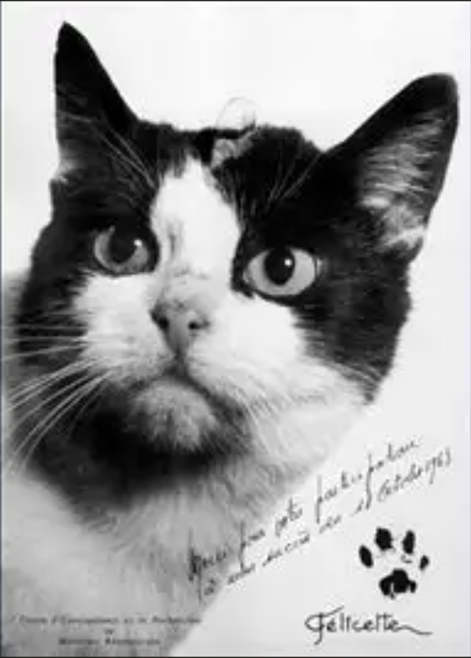
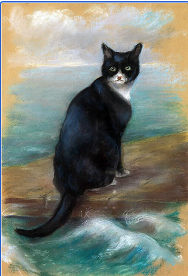
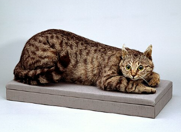

This is Félicette. On October 18 1963 she was launched into space as the first feline space traveler. Félicette was one of 14 female cats trained for space flight. Her mission was a sub-orbital flight and lasted only 13 minutes. She landed back on earth safely, but unfortunately was euthanized 2 months later so scientists could look at her brain.

This is Oscar (known as Unsinkable Sam). Unsinkable Sam was a ship’s cat who survived the sinking of three ships; German battleship Bismarck, British destroyer HMS Cossack, and the HMS Ark Royal. Oscar was reported floating on a plank after the Bismarck sank, and was rescued by the Cossack. He was then transferred to the Ark Royal after the Cossack sank. Later, the Ark Royal sank, and Oscar survived once again.

This is Crimean Tom. Tom was found by Lieutenant William Gair in Sevastopol after a year-long siege. He was said to have led the British forces to valuable caches of hidden supplies that helped ease starvation among the troops. Afterwards he was brought back to England, but soon dies and was stuffed. (image of Tom after being stuffed)